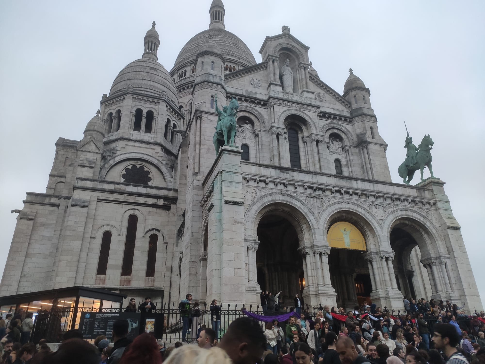
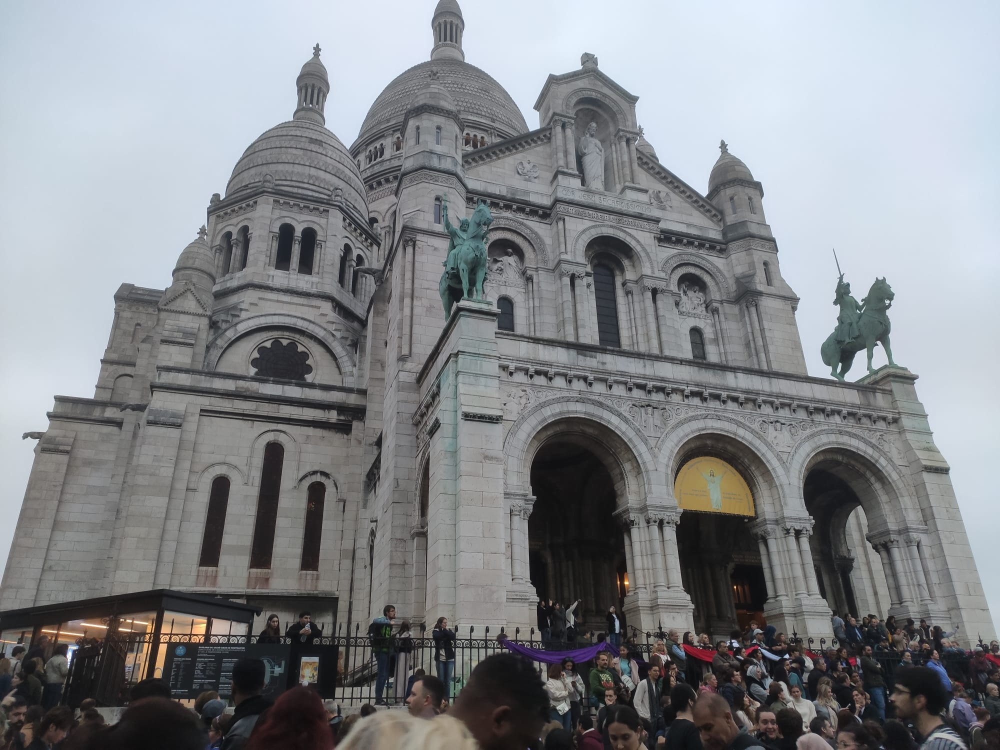

After we ate, we started walking towards the Arc de Triomphe. I was a cloudy day, but it was a beautiful view. It was morning, and traffic was crazy, but I managed to take a few photos, with very few cars in them. The Arc de Triomphe is a very beautiful building.

I had a lot of fun with my parents, I was so happy that I could finally spend time with my family...ALONE!
The next place we visited was the Notre-Dame Cathedral, which was in construction at the time. The Notre-Dame Cathedral is a very big Cathedral, and apperantly, on April 15, 2019, Notre Dame was engulfed in flames. The cause of the blaze remains a mystery. Investigators say it was likely an accident – perhaps a burning cigarette or an electrical malfunction. Anyways, I enjoyed looking at the Cathedral, and it actually got sunny. I was suprised to see so many locks on a fence, apperantly couples were writing their names on the locks and then, they we're hanging them on the fence.Nice.


We took a break from walking, an went to eat some crepes. Those Crepes were oficially the worst Crepes I ever ate in my life!!! They were disgusting! And we paid 6 Euros for only two Crepes.
After we "ate" the crepes (well, actually... my dad enjoyed them...for some reason...) we decided to go to the The Basilique du Sacré-Coeur de Montmartre. That Cathedral was ENORMOUS. I wasn't able to take a picture of the whole church. Also, the view from the Cathedral was splendid! The only problem was that I was afraid of the public, and the yard of the church (which was VERY BIG) was FULL of people. I had a panic attack. It was terrible! I barely got out of there. Apperantly, there was some sort of ceremony, an everyone was there to wach the ceremony. But all in all, it was nice. And there were 10.000 times more locks than at Notre-Dame.
 

It was about 6:30 PM, when we climbed down the hill where the Church was. Our last stop for that day (Saturday) was the Eiffel Tower. I couldn't wait to see it.I heard that at every fixed time (in the evening), the Eiffel Tower is lit up for 5 minutes. After a long walk, we arrived at the Eiffel Tower at exactly 8:00 PM, and the Tower was lighten up. It was beautiful!!! I loved it! I think that, the highlight of my trip, was the Eiffel Tower.
Today was a busy day, I've made like 35 000 steps :)